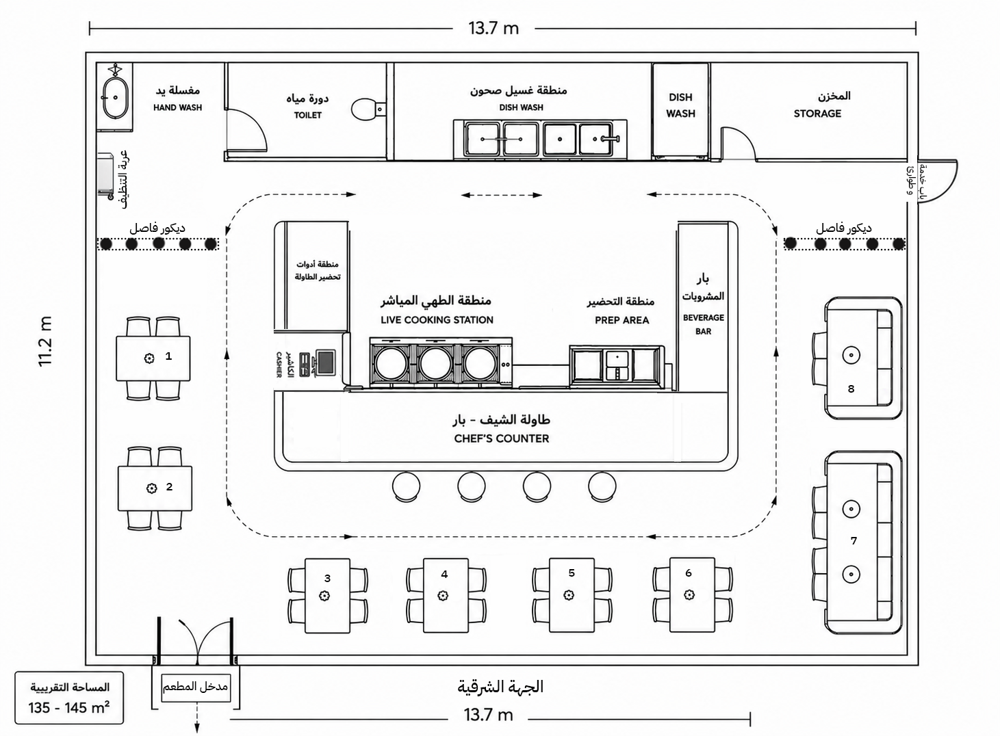
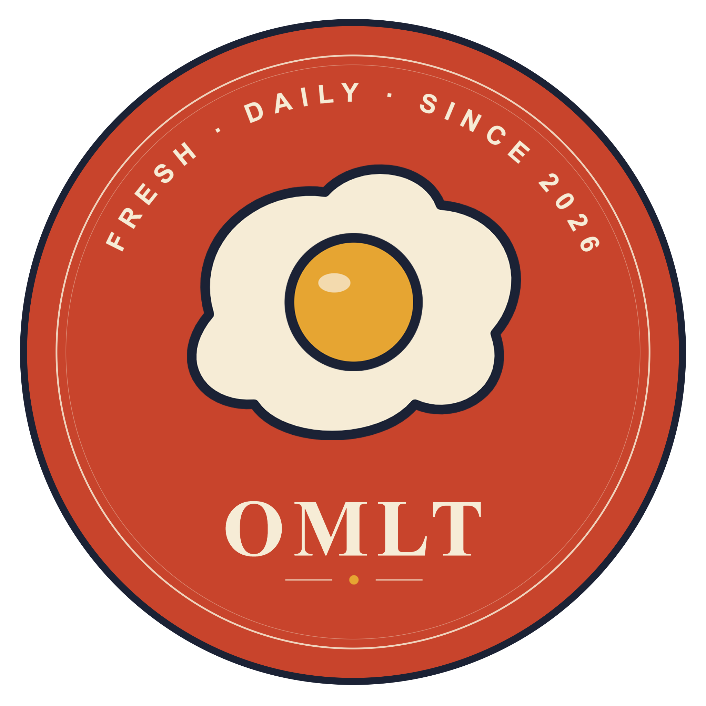

A small egg,
a loud morning.
بيضة صغيرة، صباح عالٍ.
دليل الهوية والمشروع لعلامة OMLT — مطبخ فطور قصير الذاكرة، طويل الأثر. نظام كامل من البيان إلى لافتة المتجر.
Eight
chapters,
one egg.
ثمانية فصول، بيضة واحدة.
من البيان إلى التطبيقات إلى الصوت — أرشيف مرجعي لعلامة OMLT بإيقاع كتاب علامة.
- 01Foundation البيان003
- 02Concept المفهوم004
- 03Vision & Purpose الرؤية والهدف010
- 04Business Setup & Costs التكاليف013
- 05The Mark الشارة018
- 06Color & Type الألوان والخطوط022
- 07Applications التطبيقات026
- 08Brand Voice الصوت والحسّ031
نؤمن بأنّ أبسط طبق
يستحقّ أعلى عناية.
البيضة لا تحتاج عشرة مكوّنات،
تحتاج دقيقتين من الحضور.
نخدم وصفات قليلة، نفعلها بشكل صحيح، ونبقى على نفس الموقف كل صباح.
We serve few recipes, do them right, hold the same stance every morning.
A specialty
breakfast kitchen.
Short menu.
OMLT مطبخ فطور متخصّص يعتمد على الأومليت كمنتج رئيسي ضمن قائمة قصيرة ومحدّدة، يُقدّم تجربة صباحية واضحة وسريعة داخل مساحة صغيرة ذات مطبخ مفتوح.
OMLT is a specialty breakfast kitchen with the omelette as the anchor dish, served from a short, focused menu in a small space with an open kitchen.
plain done well.
قائمة قصيرة · إيقاع صباحي ثابت · مطبخ مفتوح.
قائمة مختصرة
من ٥ إلى ٧ أصناف أساسية — تركيز على الإتقان لا التوسعة.
تشغيل صباحي محدّد
يفتح المطبخ ٧:٠٠ ص ويُغلق ٣:٠٠ م — لا برانش، لا عشاء.
إيقاع ثابت
نفس الإيقاع، نفس الجودة، طوال أيام العمل الستة.
تجربة فطور فقط
تجربة داخلية مركّزة — لا تتشتّت بين أوقات وأطعمة مختلفة.
مطبخ مفتوح
المطبخ ظاهر بالكامل أمام العميل — قلب التجربة.
٨ – ١٠ طاولات
جلسات محدودة، دوران سريع، مناسب لفترة الصباح.
ما لا
يكون OMLT.
قوة المشروع تأتي من حدوده الواضحة. هذه القائمة تحمي الفكرة من التمدّد وتُبقي التشغيل بسيطًا.
The open
kitchen is
the show.
المطبخ المفتوح ليس عنصر تصميم — بل مركز التجربة اليومية. يظهر مباشرة عند الدخول، فيُشاهد العميل التحضير والطهي والتشغيل.
صوت البيض وحركة المقلاة
إيقاع طبيعي يحلّ محل الموسيقى.
تحضير الأومليت أمام العميل
يُحضّر طازجًا أمامك
رائحة الخبز والقهوة
من المطبخ مباشرة — بدون معطّرات.
التشغيل ظاهر للعميل
الإيقاع الصباحي مفتوح طوال الزيارة.
A street, a sunrise,
a room that breathes.
الموقع ليس مجرّد عنوان — هو جزء من تجربة OMLT. الاتجاه، الحيّ، وحجم الفراغ كلها قرارات تخدم الإيقاع الصباحي.
اتجاه شرقي
تفضيل الموقع المُتجه شرقًا قدر الإمكان — ضوء الصباح جزء من التجربة.
حيّ نابض بالحياة
شارع حيوي ومأهول في أبها — لا منعزل، لا مخفي.
٨ – ١٠ طاولات
صغير ليبقى شخصيًّا، كبير ليبقى حيًّا.
OMLT Floor Plan
Layout.
Customer flow, operational efficiency and live cooking experience.
مخطط معماري معتمد — تدفّق العميل، كفاءة التشغيل، وتجربة الطهي المباشر.

Become part
of their
morning.
نهدف إلى صناعة مكان يعود إليه العميل ضمن روتينه الصباحي. النجاح يُقاس بالعودة المتكرّرة، لا بعدد الزيارات الأولى.
A reliable habit, not a spectacle.
OMLT يُقدّم وجبة فطور بسيطة ومُتقَنة، في مكان واضح ومألوف، بإيقاع صباحي ثابت.
أربعة مبادئ تحكم كل قرار في OMLT.
Plain done well
البساطة في التنفيذ — نُتقن قائمة محدودة بدلًا من التوسعة.
Clear by design
الوضوح — كل قرار يخدم سهولة الزيارة من الدخول للمغادرة.
Steady quality
ثبات الجودة — نفس الإيقاع كل صباح، طوال أيام العمل.
Build the habit
بناء العادة — كل قرار يُختبر: هل يدعم العودة؟
نموذج واحد يُثبت أولًا، ثم يُدرَس التوسّع.
إثبات الفكرة
- · افتتاح الفرع الأول
- · بناء قاعدة عملاء أساسية
- · تحسين التشغيل اليومي
توثيق وتطوير
- · توثيق الوصفات قياسيًا
- · إجراءات تشغيل موحّدة
- · استقرار مالي للفرع الأول
دراسة التوسّع
- · دراسة فرع ثانٍ عند النجاح
- · تقييم الموقع بالبيانات
- · الحفاظ على النموذج والهوية
Setup
budget,
itemised.
الأرقام تقديرية لنموذج تشغيلي صغير — مساحة محدودة، ٨–١٠ طاولات، فريق مختصر.
| البند · ITEM | التفاصيل · DETAIL | SAR |
|---|---|---|
| تهيئة وتجهيزInterior | Build-out · joinery · lighting | 120,000 – 180,000 |
| معدّات المطبخEquipment | Induction · pans · refrigeration · ventilation · POS | 70,000 – 100,000 |
| أثاث وطاولاتFurniture | Tables · chairs · ceramics | 30,000 – 50,000 |
| هوية وطباعةBranding | Print · signage · kits | 20,000 – 30,000 |
| تراخيص وتأسيسLicensing | CR · municipality · health · setup | 20,000 – 35,000 |
| سيولة تشغيل أوليةWorking capital | First months runway | 70,000 – 100,000 |
| الإجمالي المتوقّع · Estimated launch range | 330,000 – 495,000 | |
330K – 495K
ريال سعودي
تهيئة، تشطيب، إضاءة، تنفيذ المطبخ المفتوح.
معدّات الطبخ، التبريد، القهوة، التهوية، POS.
الهوية، الطباعة، اللافتات، التغليف.
سيولة لأوّل أشهر — احتياط أمان.
ستّة أدوار، فريقٌ صغيرٌ ودقيق.
Head Chef · شيف رئيسي
الجودة والإشراف والتشغيل اليومي للمطبخ.
Kitchen Assistant · مساعد مطبخ
التجهيز والتحضير ودعم وقت الذروة.
Beverage · مسؤول مشروبات
تحضير القهوة والشاي والمشروبات الصباحية.
Service · موظّف خدمة
الاستقبال، تقديم الطلبات، متابعة الطاولات.
Cashier · كاشير
نقاط البيع، التقفيل، الجرد، طلبات التوريد.
Support · نظافة ومساندة
نظافة الصالة والمطبخ ودعم تشغيلي عام.
A lean
monthly
payroll.
الأرقام شاملة لكل بنود التوظيف، مبنية على ساعات تشغيل صباحية فقط (٧:٠٠ – ٣:٠٠).
| الوظيفة · ROLE | ENGLISH | SAR / month |
|---|---|---|
| شيف رئيسي | Head Chef | 5,500 – 6,500 |
| مساعد مطبخ | Kitchen Assistant | 2,500 – 3,500 |
| مسؤول مشروبات | Beverage Specialist | 2,500 – 3,000 |
| موظّف خدمة | Service Staff | 2,500 – 3,000 |
| كاشير | Cashier | 3,000 – 3,500 |
| نظافة ومساندة | Cleaning & Support | 1,800 – 2,200 |
| إجمالي الرواتب الشهري · Total monthly payroll | 17,800 – 21,700 | |
إيرادات مبنية على استقرار، لا على وعود.
SAR / guest
covers / day
days / week
morning shift only
الهدف عملاء متكرّرون
قاعدة عملاء مخلصين قبل ملاحقة الإيرادات.
قائمة مختصرة
تحكّم بتكاليف المواد والإنتاج.
فريق مختصر
رواتب أقل وتشغيل أبسط.

The badge.
One mark,
every surface.
شارة دائرية تحوي رمز البيضة في المنتصف، نصًّا مُقوَّسًا حول الأعلى، واسم العلامة OMLT في الأسفل. اعتُمدت رسميًّا كهوية وحيدة للمشروع.
Six layers,
one signal.
Primary · Mono · Wordmark.
A logo doesn't negotiate.
Six colors.
Locked ratios.
One drop of
yolk.
Never a sea.
اللون الصفار يظهر لمسة واحدة فقط في كل تصميم — لا اثنتين، ولا يُستخدم كخلفية أبدًا. هذا ما يجعله توقيعًا، لا حشوًا.
start to the day.
The serif that
speaks slow.
يُستخدم Frank Ruhl Libre للعناوين، اسم العلامة، الجمل التحريرية، والاقتباسات. أوزانه: 400، 500، 700، 900.
Libre.
omelette ·
38 SAR
مطبخ فطور صغير
Twelve icons,
three patterns.
A pantry of six
SKUs, one shelf voice.
From the corner
to the counter.
Daily
07:00 — 15:00
Web · Instagram · Maps.
Mushroom omelette
فطر طازج · بيض مخفوق · خبز اليوم
Apron · Tee · Cap.
Warm · Clear · Brief · Signed.
دافئة · Warm
ألوان طبيعية، إضاءة هادئة، مكان مألوف.
واضحة · Clear
بدون مبالغات بصرية. كل عنصر له وظيفة.
مختصرة · Brief
لغة قصيرة، ثقة في فهم العميل.
موقّعة · Signed
ظهور واحد للشارة في كل سطح.
Sight · Smell ·
Touch · Warmth.
البصر · Sight
إضاءة دافئة، مطبخ مفتوح. لا شاشات.
الشمّ · Smell
الخبز والبيض والقهوة — من المطبخ مباشرة.
اللمس · Touch
أكواب وأطباق متينة، مريحة في الاستخدام.
الحرارة · Warmth
إضاءة دافئة 2700K. لا ضوء بارد.
Let the
kitchen
speak.
خلال ساعات الصباح، تكون أصوات المطبخ — تحضير البيض، حركة المقلاة، تجهيز القهوة — جزءًا واضحًا من تجربة المكان.
A clear
and simple
morning.
بداية صباح واضحة وبسيطة.
OMLT · MASTER ARCHIVE · ABHA · KSA